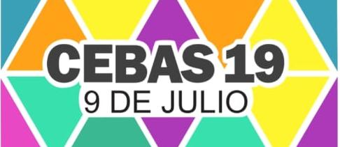

¡Cuidemos Nuestro Barrio!
Clasificaremos 12 residuos con fotografías reales en sus contenedores oficiales, y luego responderemos 10 preguntas sobre salud y entorno.
Fase 1: Separación en Origen

Clasificaremos 12 residuos con fotografías reales en sus contenedores oficiales, y luego responderemos 10 preguntas sobre salud y entorno.